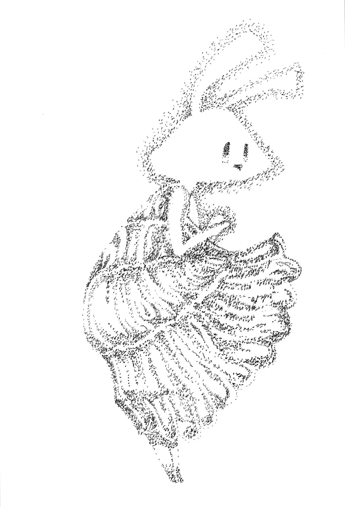
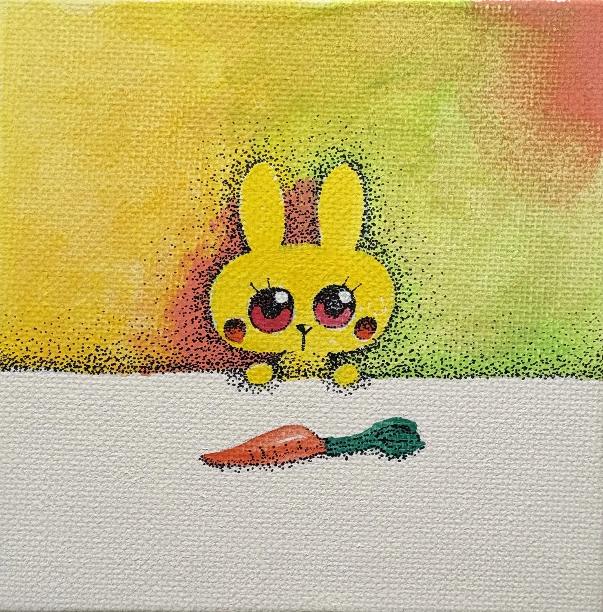
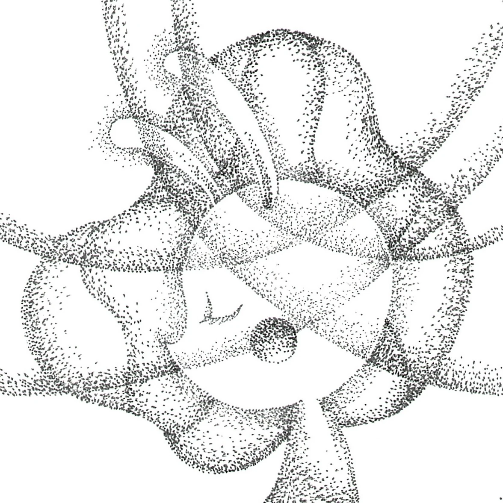
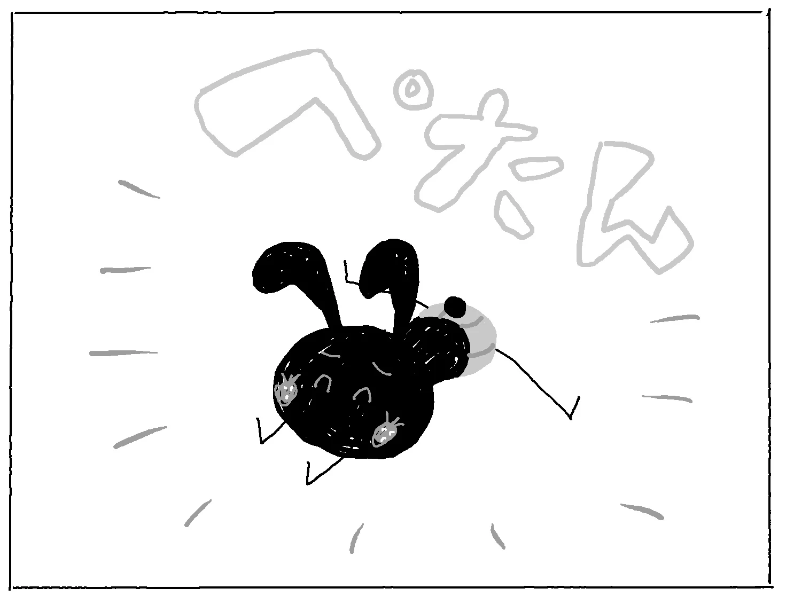
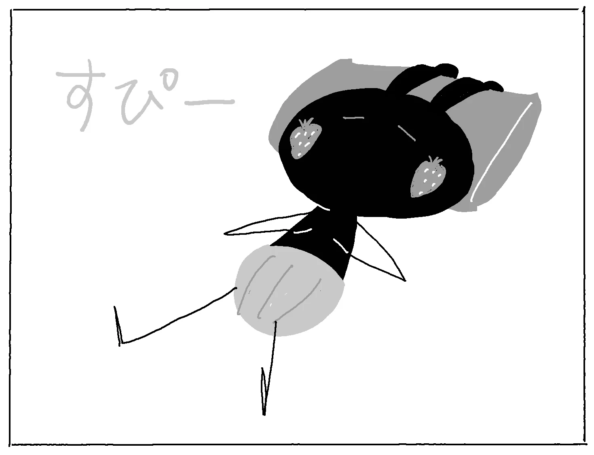
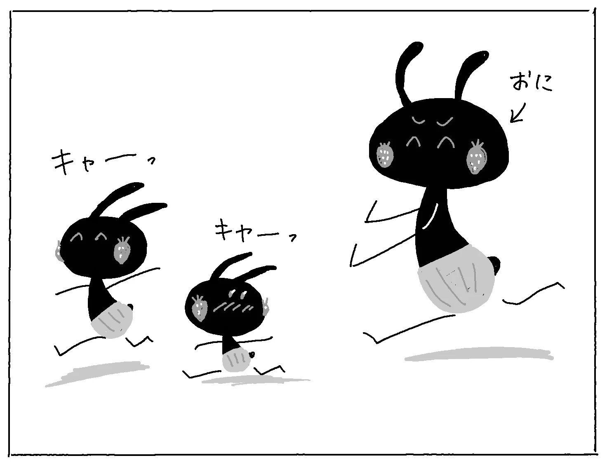
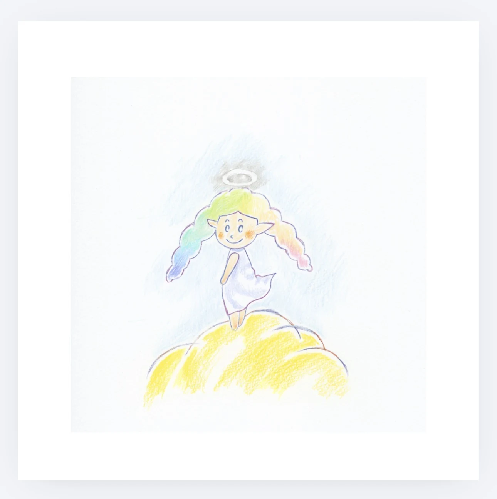
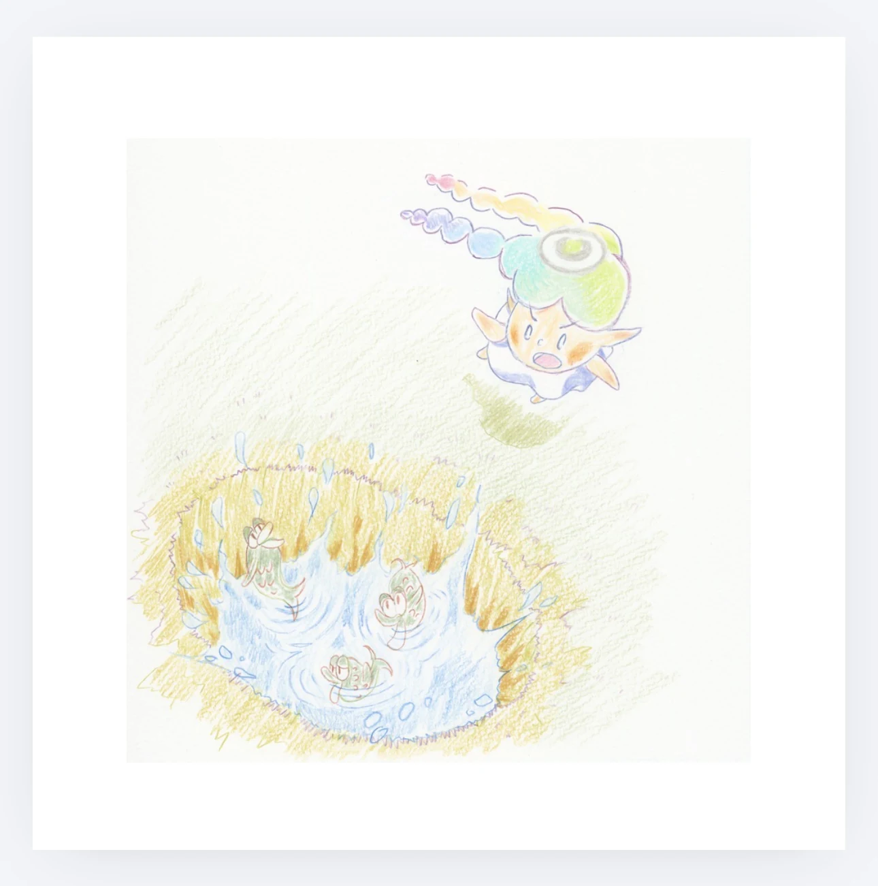

WORKS
作品の展示室
点を重ねた絵、くろうさの毎日、物語のための挿絵。
それぞれの作品を、ゆっくりご覧ください。
01 · STIPPLING
点描の世界
小さな点の重なりから、かたちや表情が生まれます。



02 · KUROUSA
くろうさの毎日
いちごのほっぺをした、黒いうさぎ。気ままな日々のひとこま。



03 · PICTURE BOOK
絵本と挿絵
『てんしのクレヨン』の表紙と、物語の中の3つの場面。


